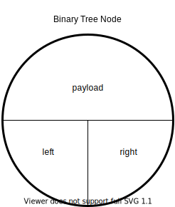
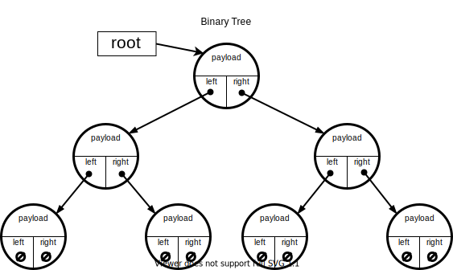
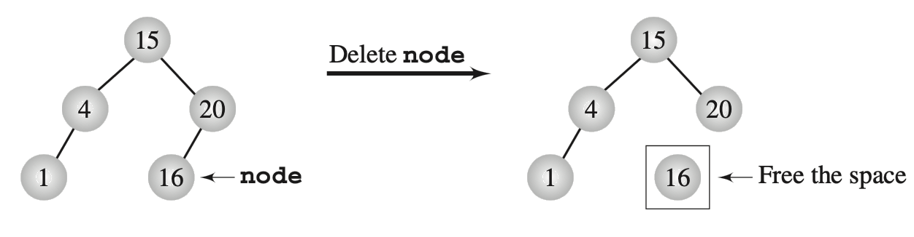
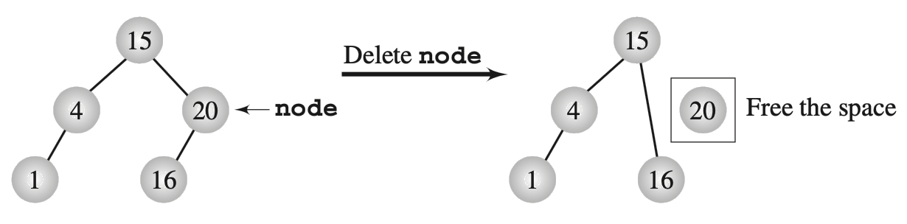
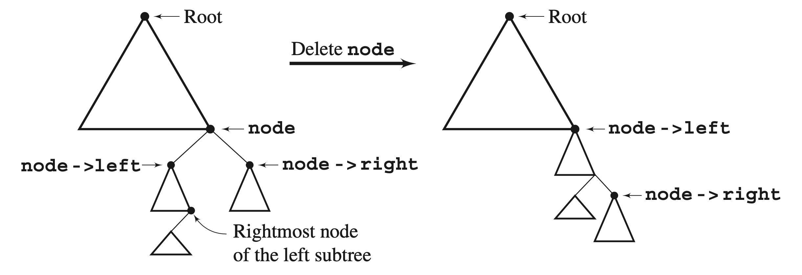
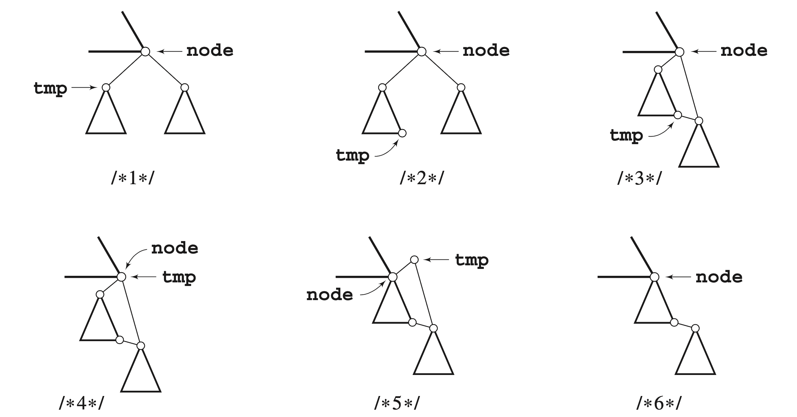
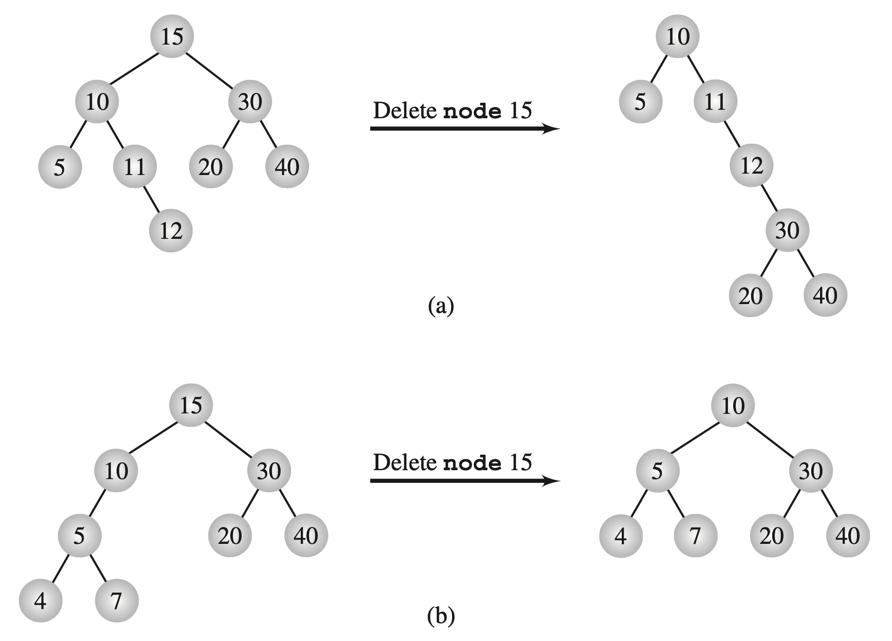

Trees - Binary Search Trees
📚 Gaddis (Ch. 21), Drozdek (Ch. 6)
Trees
In the computer science sense, trees are simply non-linear linked structures where each node may link to two or more other nodes, in a hierarchical fashion.
- The entry point into a tree is called the root.
- Trees are (usually) drawn “upside down”, with the root at the top.
- Normally, we don’t draw the null pointers when we draw a tree… but we must remember that they are there.
Trees
We use terms borrowed from family trees to describe the hierarchical relationships between nodes in CS trees.
(parent, child, grandparent, sibling, etc.)
- Interior nodes – have at least one child
- Leaf nodes – have no children
- Edge - A non-null outgoing link from a node to its child node.
- Height - Longest path along edges from root to any leaf, plus one.
- (The empty tree is height 0, a single node is height 1.)
- Subtree - any node in the tree, and all its descendants.
Binary Trees
A binary tree is a tree in which each node has up to two children.
- These are the most common type
- Easy to design and conceptualize (and code)
- Useful in many contexts
- The order of the values may or may not matter.
Binary Tree Node
The binary tree “Node” must store a payload value and maintain pointers to the left and right subtree.
Binary Tree
The “Tree” object must store an owning pointer to the root of the tree. The tree itself has ownership responsibility for all nodes in the data structure.
Binary Search Trees
A Binary Search Tree is a binary tree that has the following additional properties:
- From any node in the tree, the left child (if non-null) has a smaller value than the parent.
- From any node in the tree, the right child (if non-null) has a larger value than the parent.
As the name implies, Binary Search Trees are optimized for searching.
Binary Search Trees
Binary search trees are shaped by the order in which values are added to the container.
Order of value addition affects efficiency.
Consider these different situations:
“Random” arrival
Non-random (partially ordered) arrival
Discuss best, average, worst case search time for each.
Examples - Build algorithms for the following:
Add items
Search for items
Traversals
In-order
pre-order
post-order
Remove items
Search for items
algorithm binary search tree search (target, root):
let current := root
let answer := not_found_indicator
if target == value at current:
let answer := current
otherwise, if target < value at current:
if current has a left child:
let answer := tree search for target at current's left child.
otherwise:
if current has a right child:
let answer := tree search for target at current's right child.
return answer.Add an item
algorithm binary search tree insert (item, root):
let current := root
if item < value at current:
if current has no left child:
add new node containing item as current's left child.
otherwise:
insert item in the subtree rooted at current's left child.
otherwise:
if current has no right child:
add new node containing item as current's right child.
otherwise:
insert item in the subtree rooted at current's right child.Traversals
Traversal: In-order
algorithm binary search tree in-order traversal (root):
let current := root
if current exists:
perform in-order traversal from current's left child.
visit the current node.
perform in-order traversal from current's right child.
Traversal: pre-order
algorithm binary search tree in-order traversal (root):
let current := root
if current exists:
visit the current node.
perform in-order traversal from current's left child.
perform in-order traversal from current's right child.
Traversal: post-order
algorithm binary search tree in-order traversal (root):
let current := root
if current exists:
perform in-order traversal from current's left child.
perform in-order traversal from current's right child.
visit the current node.Remove items
Deleting an item from a binary tree is a bit more complicated, since the target item may have left and/or right subtrees attached.
We will take a look at the simple cases, and then the more complicated ones.
Tree deletion - trivial cases


Figures: Drozdek, Figure 6.26 (top), Figure 6.27 (bottom).
Tree deletion - delete by merge (refer to Drozdek Ch. 6.6 for algorithms)


Figures: Drozdek, Figure 6.28 (top), Figure 6.30 (bottom)
When delete by merge is used, the height of the tree may change rather dramatically, either increasing or decreasing:
The height of a tree can be (a) increased or (b) reduced after deleting by merging.
Figure: Drozdek, Figure 6.31
Tree deletion - delete by copy
If the value in a node is mutable, you can perform a delete by copy.
Delete by copy first locates the smallest value in the left subtree OR the largest value in the right subtree (just like delete by merge)–let’s call that value tmp. Then it simply copies the value from tmp into the target, then deletes node tmp.
When delete by copy is used, the height of the tree will always either remain the same, or be reduced.
Figure: Drozdek, Figure 6.33
Visualizations
https://www.cs.usfca.edu/~galles/visualization/BST.html

Trees - Binary Search Trees

CS 50x2 Accelerated Programming Series